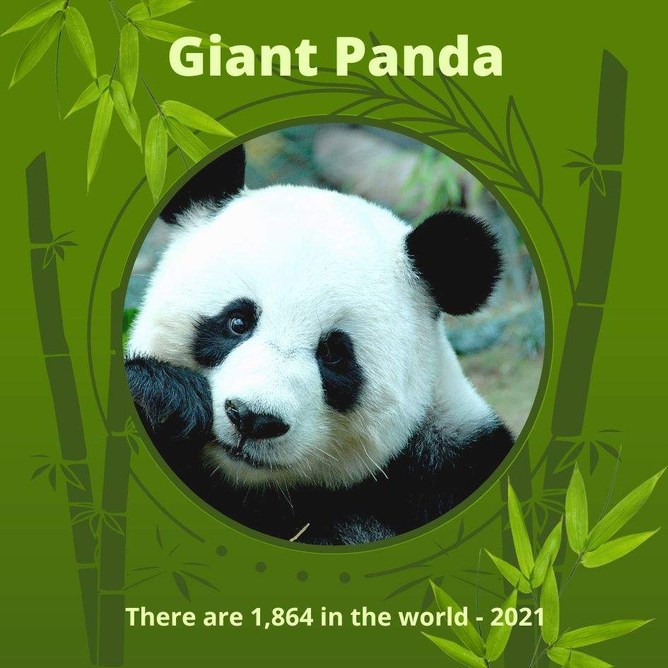

Main Character Energy, Panda Only!
Welcome to a cozy world of adorable pandas, playful moments, and bamboo-filled adventures!
Discover cute panda photos, heartwarming stories, interesting facts, and the importance of protecting pandas.
Our purpose is to spread panda love and encourage everyone to help protect these adorable animals.

Giant pandas are famous for their black-and-white fur and their love of bamboo. These gentle animals are among the world's most beloved wildlife species.
Let's appreciate pandas and help protect their natural habitat!